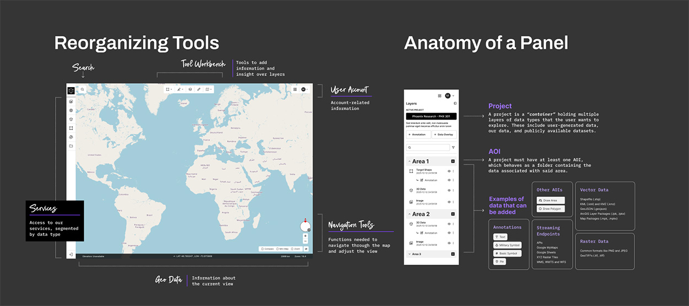
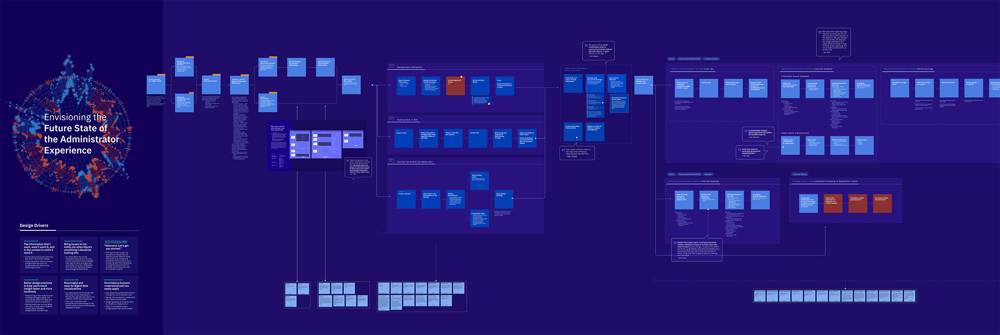
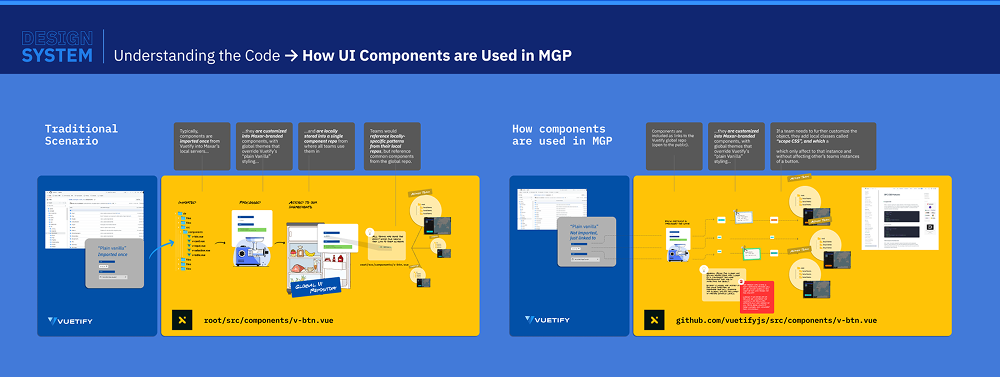
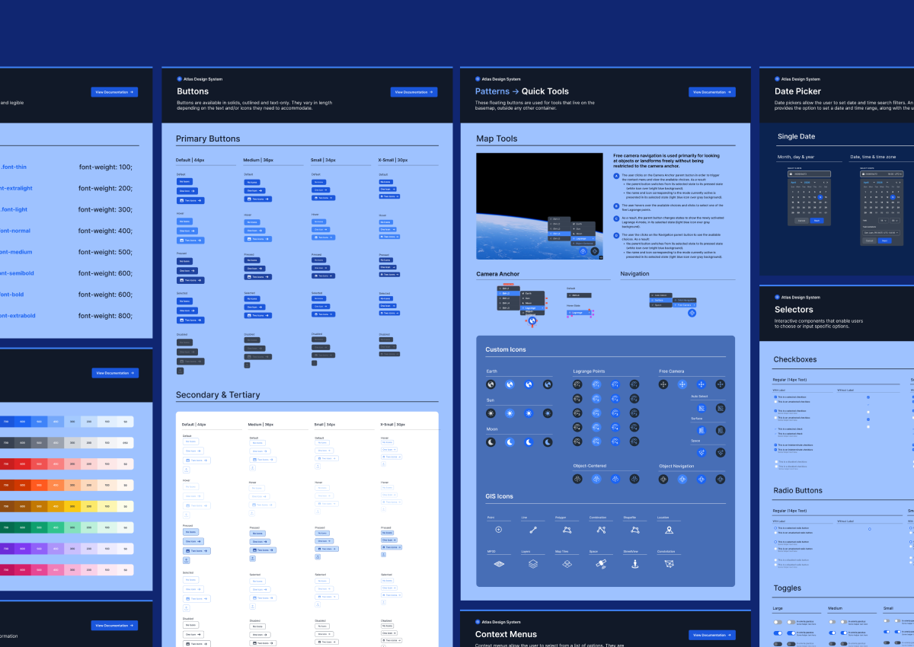
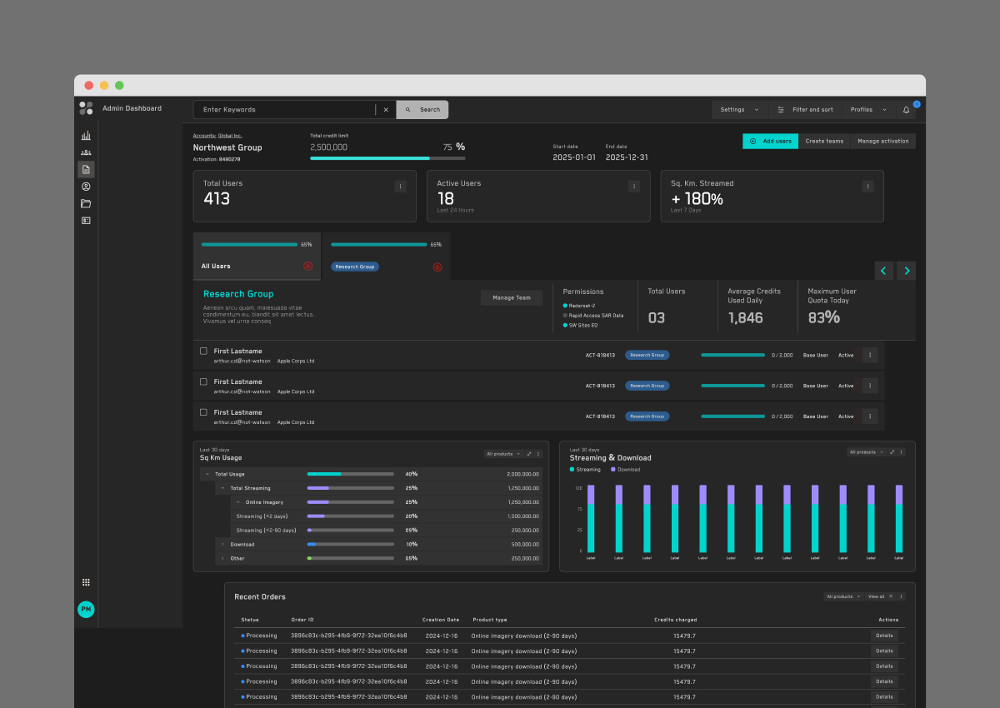
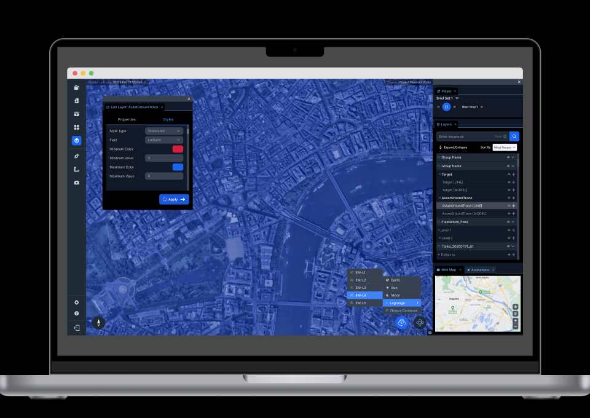
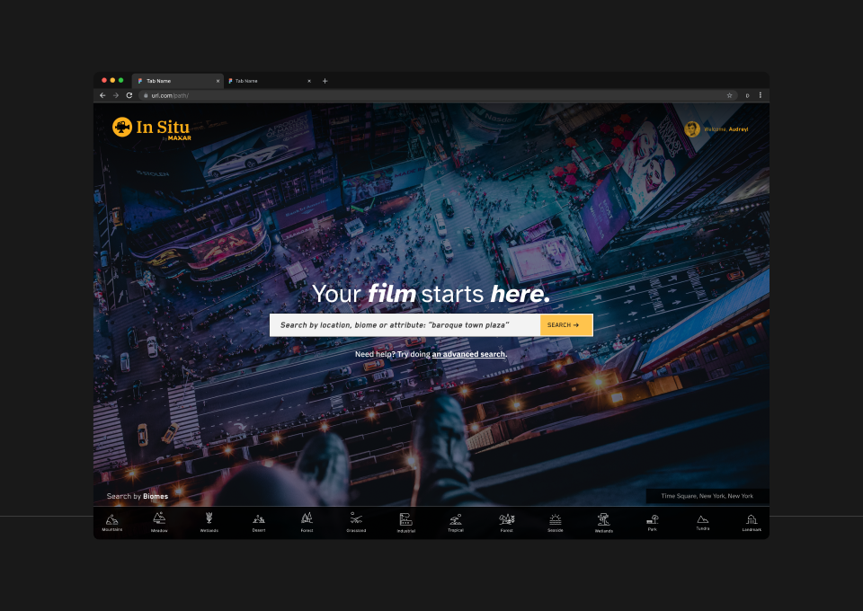
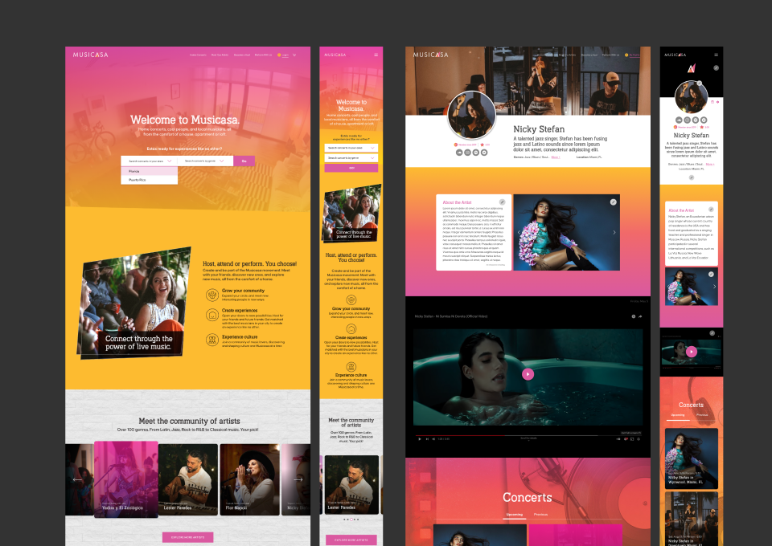
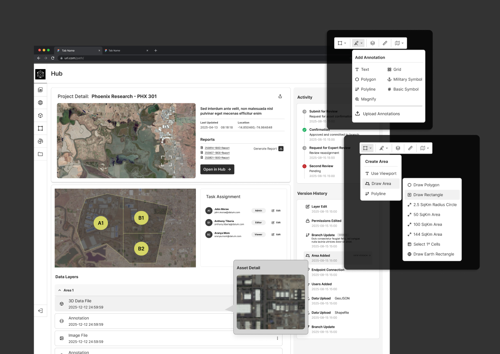
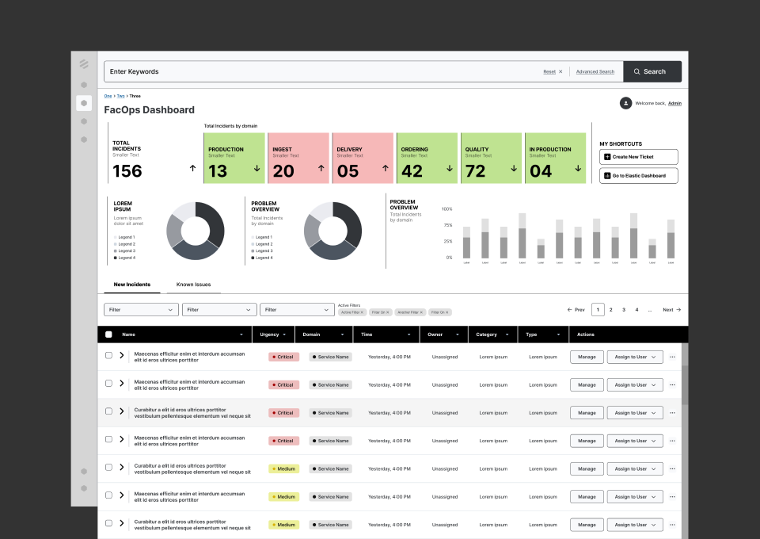

I'm a senior product designer with a passion for human-centered design, technology and usability. I'm seeking a position in design engineering.
I'm trained in architecture and graphic design, and have 25+ years of multidisciplinary design experience {print, brand, web}. For the past 12, I have been focused on product design and UX engineering.
In a Nutshell
- I have been recently focused on designing for enterprise-level SaaS platforms: creating seamless experiences across different channels and user types; managing design systems and documentation that leads to adoption and tech debt reduction; devising strategies that ensure scalable and future-proof environments capable of handling growing business and technical demands.
- I particularly enjoy owning a specfic product domain and working consistently with that same context (rather than constantly switching between projects for different products), as that constant gathering of knowledge about the user's goals as well as the jobs-to-be-done in each workflow, allows me to come up with richer, better-informed design decisions, as well as allowing me to proactively bring to product owners suggestions for new features that might not necessarily been in the pipeline already.

- I'm involved in: leading user interviews and cross-functional design thinking workshops; using AI-assisted research and synthesis to drive discovery into ideation; prototyping ideas to address viability with engineering; daily standups and grooming sessions with engineers; preparing PRDs and handoff documentation; providing developers with the exact components and props we'll be using.
- I think like a detective: I gather insight on business needs, technical constraints and users' needs and challenges, and I help teams connect the dots that lead to cross-functional alignment into defining what to build, and making sure we're building it right. More often that not, our most important role as a designer is bringing real user facts to the surface which often make stakeholders aware of issues they had not even considered in their original ask, or that the features they are requesting us to design are not in fact the best solution to the original problem.

-
Having extensive hands-on coding experience (I'm a front-end designer 🦄), I excel at identifying risks early. I tend to act as a translator between design and engineering, and help everyone understand each other's concerns and challenges without anything getting lost in [tech] translation.
-
I’m a fierce advocate of transfering design knowledge –from layouts, to specs and PRDs– as close as possible to code, and to the specifics frameworks (Vue, React, ect.) being used. The goal is to reach fidelity and parity faster, mitigate tech and design debt, and to reduce feedback loops that cause delays and friction.

- P.S. I believe in <!--handshakes, not handoffs.--> Design and engineering's collaboration must start at the beginning of the project, not when Jira tickets are created. It should be a constant, symbiotic relationship, where standups and critical touchpoints can ensure that challenges are tackled early on.
Where I Shine
Projects that benefit from deep knowledge of code
I'm able to understand how technical constraints impact the design decisions we can make, and I'm able to identify possible issues early on and ask engineers very specific questions that could lead us to what our options are.
Making sense of complex information architectures
I'm good at organizing large amounts of data and designing intuitive workflows that help users get faster to insight. I rely greatly on user research to understand what's most relevant to them, on implementing familiar mental models that reduce friction, and on leveraging good practices such as progressive disclosure, sensible information hierarchy and visual cues.
Design systems and documentation
Detail-oriented by nature, I develop systems with a keen sense of precision, scalability and modularity: I enjoy working at this granular level. And my coding know-how means I can tell a dev to use a <v-combobox>, with X props and variants, and the Y and Z icons for the prepend & append slots. A shared vocabulary with engineers, fewer handoff gaps, and no need for pixel-pushing.
Deep & meaningful research
I never shy away from an opportunity to dive deep into research, particularly in entirely new technologies that are outside my comfort zone. I'm usually assigned that "complex tech research that nobody else wants to do", and enjoy being able to then translate it back to our team.
Featured Work
-

AtlasDesign system for a geospatial imagery application
-

Admin ModuleAccount & user management module for a geospatial insight platform
-

Atlas UIUI redesign for a geospatial visualization and analytics tool
-

In SituFilm location application
-

MusicasaMarketplace connecting emerging musicians with home concerts
-

Map ToolsIdeal state visualization for satellite imagery visualization
-

IDDIncident management platform